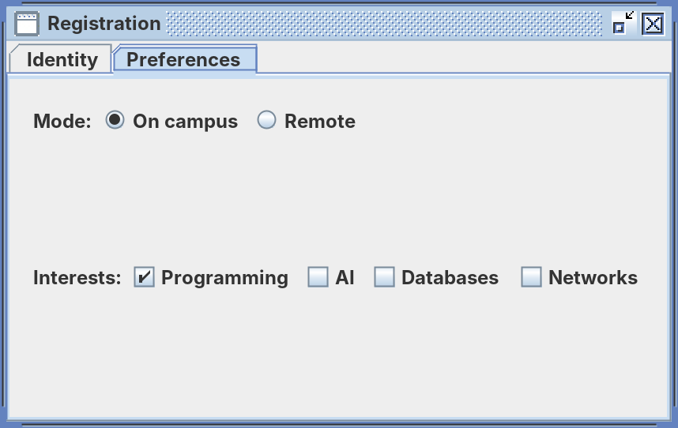
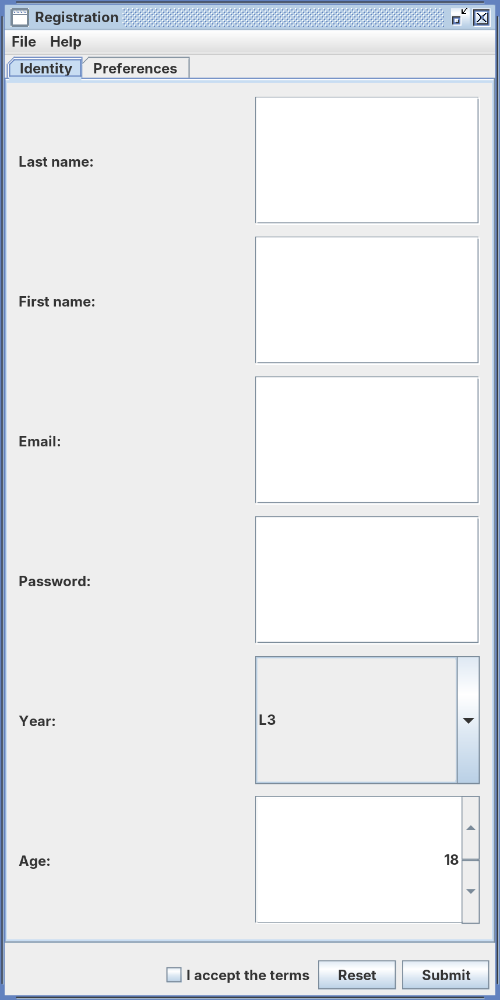
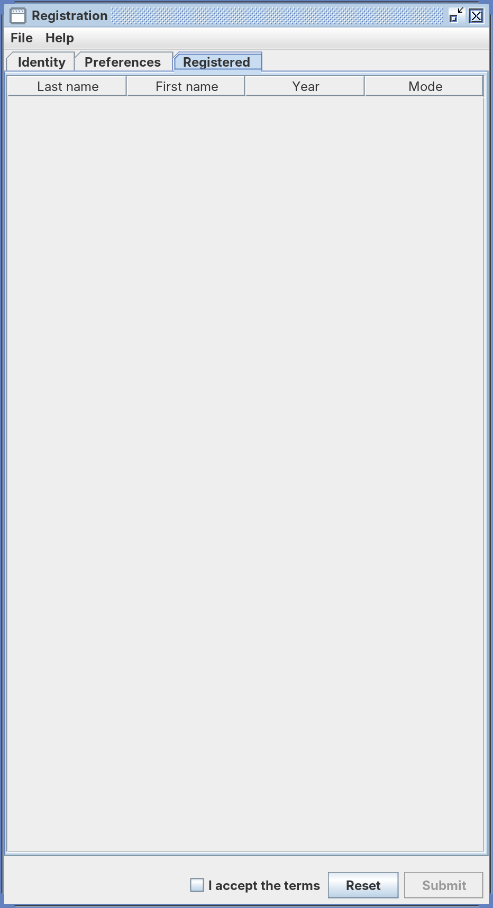

Université d'Alger 1 – Benyoucef Benkhedda
Faculty of Sciences · Computer Science Department
- Module
- Human-Computer Interaction (HCI)
- Level
- L3 – Semester 5 (ISIL, SI)
- Instructor
- Dr. Izountar Yousra
- Academic year
- 2026 / 2027
- Lab
- Lab 2.1 – Registration Form with the Main Swing Components
- Duration
- 75 min
- Tools
- Java 21 (JDK) · VS Code · Swing
- Prerequisite
- Lab 1.1 and 1.2 (Java, VS Code, Swing basics)
Registration Form with the Main Swing Components
Build a multi-tab registration form that uses the main Swing components: text fields, selection components, a menu bar, buttons, events and a table.
For each step you have the real interface to build (click its numbers to name each component) and the code, given stage by stage (it cannot be copied: type it yourself). After each stage you run the program and compare your window with the picture. Click any line of code to see what it does.
Objectives
- Set up the project
TpSwing2with one class per exercise. - Use text and selection components:
JTextField,JPasswordField,JComboBox,JSpinner, radio buttons, check boxes,JList,JSliderandJTextArea. - Organize a form with
JTabbedPaneandGridLayout. - Add a menu bar, buttons with events, and a
JTableupdated by the form.
Session plan
| Part | Time |
|---|---|
| 0. Setup | 5 min |
| 1. Exercise 1: Registration form with the main Swing components | 70 min |
| Total | 75 min |
Help guide help to work without problems
Read this page before starting and come back to it as soon as something does not work. Most problems of this lab are listed here.
1 · Before you start: checklist
- Labs 1.1 and 1.2 done: you can build a window, use layouts and handle a click.
- Create the project
TpSwing2and one class (one file) per exercise, named exactly as in the steps. - A file can contain only one public class, whose name is the file name.
2 · Quick reference for this lab
| Item | What it does |
|---|---|
JPasswordField | Hidden input: getPassword() returns a char[] → new String(pw.getPassword()). |
JComboBox<String>(array) | Drop-down list; getSelectedItem() returns an Object (use .toString()). |
JSpinner(new SpinnerNumberModel(v, min, max, step)) | Number with arrows; getValue() returns an Object. |
JRadioButton + ButtonGroup | The group makes the buttons exclusive: add each radio button to the group. |
JCheckBox | isSelected() tells whether it is ticked. |
JList, JTextArea, JTable | Put them in a JScrollPane to get scrollbars (and the table header). |
JTabbedPane.addTab(title, panel) | One tab per panel. |
JMenuBar → JMenu → JMenuItem | Attach with setJMenuBar(bar). |
DefaultTableModel.addRow(Object[]) | Adds a row to the JTable and refreshes it. |
3 · Common problems and how to fix them
| Symptom or message | Cause | Fix |
|---|---|---|
| Several radio buttons can be selected at the same time | They are not in the same ButtonGroup. | Create one ButtonGroup and group.add(radio) for each radio button. |
| The list or the text area has no scrollbar | The component is not inside a JScrollPane. | new JScrollPane(list) and add the scroll pane, not the list. |
| The table has no header or does not refresh | No JScrollPane, or the data are not in a DefaultTableModel. | new JTable(model) inside a JScrollPane; use model.addRow(...). |
| The menu bar does not appear | You used add(menuBar). | Use setJMenuBar(menuBar). |
incompatible types: Object cannot be converted to String | getSelectedItem() and getValue() return Object. | Cast or convert: (String) combo.getSelectedItem(), (int) spinner.getValue(). |
Password shows strange characters like [C@1b6d3586 | You printed the char[] itself. | new String(password.getPassword()). |
'javac' is not recognized / command not found | A JRE (no compiler) is installed, or the terminal was opened before the installation (PATH not updated). | Install the JDK (Temurin 21), close and reopen the terminal, check javac -version. |
class X is public, should be declared in a file named X.java | The class name and the file name are different (case matters). | Rename the file or the class so that they are identical: RoomBooking ↔ RoomBooking.java. |
cannot find symbol on JFrame, JButton, Color… | Missing import or typo (Java is case sensitive). | Add import javax.swing.*; and import java.awt.*; (and java.awt.event.* if needed) at the top of the file. |
| Red underlines everywhere, Run button missing | VS Code did not open a Java project (you opened a single file) or the Java extension is still loading. | File → Open Folder on the project folder, wait for the loading indicator to end, restart VS Code if needed. The Run link appears above main. |
| The program runs but no window appears | setVisible(true) is missing, or an exception stopped the program before. | Call setVisible(true) at the end (in main) and read the red text in the terminal. |
| The window closes but the program keeps running | The close operation is not defined. | setDefaultCloseOperation(JFrame.EXIT_ON_CLOSE); — or press the red square in VS Code to stop it. |
HeadlessException | The program runs on a machine without a screen (remote SSH, Linux without a graphical session). | Run it on your own computer with a display. |
| A component is invisible | add(...) forgotten, added to another panel, or no size when the layout is null. | Check that every component is added to the right container; avoid null layout. |
4 · Tips and working method
- Build the form tab by tab and test each tab before moving on.
- Use names for attributes (
nameField,levelCombo) so that the event code stays readable. - If the window layout looks strange, check which layout manager each panel uses.
- If you are stuck for more than 5 minutes: re-read the step, compare with the mockup, search the error message, then ask your instructor with the exact error message and your code.
5 · What to hand in
- Your .java file(s) of the lab, with the class names given in the steps.
- A screenshot of each running window, when a step asks for it.
- Send them the way your instructor asks (file names with your name and group).
- Before sending: close VS Code, reopen your project and run it once more: it must work from scratch.
0. Setup ⏱ 5 min
0.1Create the project TpSwing2
⏱ 5 min
Create the project TpSwing2
⏱ 5 minOpen VS Code, press Ctrl+Shift+P, choose Java: Create Java Project → No build tools and name the project TpSwing2. For each exercise you will create one separate class (one .java file) in src/. Check that the JDK still works:
Guidelines
- Step 1 · Open VS Code, press Ctrl+Shift+P, type
Java: Create Java Project, choose No build tools, pick a folder and name the projectTpSwing2. - Step 2 · In the Explorer, your code goes in the
src/folder. Delete the defaultApp.javaif you do not need it. - Step 3 · Right-click
src→ New Java File, one file per exercise:RegistrationForm(1),RoomBookingandRoomBookingFixed(2),CoffeeKiosk(3). The class name must be identical to the file name. - Step 4 · Every Swing file starts with
import javax.swing.*;andimport java.awt.*;, the classextends JFrame, and ends with amainthat starts the window withSwingUtilities.invokeLater(() -> new RegistrationForm().setVisible(true)); - Step 5 · Run the two commands below in the terminal. Both must print a version number; otherwise the JDK is not installed or not in the PATH: ask for help.
- Common mistake: a file named
registrationform.javawith a classRegistrationFormdoes not compile (case matters).
java -version javac -version
1. Exercise 1: Registration form with the main Swing components ⏱ 70 min
1.1Registration form: text and selection fields
⏱ 15 min
Registration form: text and selection fields
⏱ 15 minCreate RegistrationForm (a JFrame) with a JTabbedPane. The first tab Identity contains six labelled fields arranged in a 6×2 grid, using a different Swing component for each kind of data.
Guidelines
- Step 1 · Create
RegistrationForm.java:public class RegistrationForm extends JFramewith the importsjavax.swing.*andjava.awt.*. - Step 2 · Declare the fields as attributes of the class (not local variables), because steps 1.3 and 1.4 will reuse them:
lastName,firstName,email(new JTextField(15)),password(new JPasswordField(15)),year(JComboBox<String>with L1, L2, L3, M1, M2),age(JSpinnerwithnew SpinnerNumberModel(18, 16, 60, 1)). - Step 3 · In the constructor:
super("Registration")(the title must be identical to the image),setDefaultCloseOperation(EXIT_ON_CLOSE),setLayout(new BorderLayout(10, 10)). Select L3 in the combo box withyear.setSelectedItem("L3")to match the image. - Step 4 · Build the tab:
JPanel id = new JPanel(new GridLayout(6, 2, 10, 10));withBorderFactory.createEmptyBorder(10, 10, 10, 10). Each row = twoadd()calls, theJLabelfirst then the field, in this order: Last name:, First name:, Email:, Password:, Year:, Age: (labels end with a colon, exactly as in the image). - Step 5 · Put the panel in a tab:
JTabbedPane tabs = new JTabbedPane(); tabs.addTab("Identity", id);thenadd(tabs, BorderLayout.CENTER);. Do not add the fields directly to the frame. - Step 6 · End the constructor with
pack()andsetLocationRelativeTo(null), then write themainmethod (see step 0.1). - Before you submit: the title is Registration; there are 6 rows aligned in 2 columns; the spinner shows 18 and refuses 70; the password field shows dots; the window appears centred and not too large.
- Common mistakes: forgetting
setVisible(true)inmain; callingadd(...)beforesetLayout(...); forgettingpack()(tiny window). Add at least 3 comments in your code (// ...).
Build this window in 2 stages. In each stage: type the green lines, run, and compare your window with the picture. Then go to the next stage.
RegistrationForm.java Components of Lecture 4 in this window
| # | Lecture 4 name | Swing class | Why |
|---|---|---|---|
| 1 | Tabs (tabbed notebook) | JTabbedPane | Groups: information in pages labelled by tabs. |
| 2 | Label (non-editable text) | JLabel | Text attached to a component, or information the user cannot change. |
| 3 | Label (non-editable text) | JLabel | Text attached to a component, or information the user cannot change. |
| 4 | Label (non-editable text) | JLabel | Text attached to a component, or information the user cannot change. |
| 5 | Label (non-editable text) | JLabel | Text attached to a component, or information the user cannot change. |
| 6 | Password text zone | JPasswordField | The letters are hidden. |
| 7 | Label (non-editable text) | JLabel | Text attached to a component, or information the user cannot change. |
| 8 | Drop-down list | JComboBox | The chosen value is always visible; the list opens with the arrow. |
| 9 | Label (non-editable text) | JLabel | Text attached to a component, or information the user cannot change. |
| 10 | Increment spinner | JSpinner | A precise value with min, max and step. |
1.2Preferences tab: choices and free text
⏱ 20 min
Preferences tab: choices and free text
⏱ 20 minAdd a second tab Preferences that uses the selection components of Swing: radio buttons, check boxes, a list, a slider and a text area.
Guidelines
- Step 1 · In the same file, create the panel of the second tab:
JPanel pref = new JPanel(new GridLayout(0, 1, 5, 5));(0 rows = as many rows as needed, one component per row). - Step 2 · Mode: a small panel
new JPanel(new FlowLayout(FlowLayout.LEFT))containing aJLabel("Mode:")and twoJRadioButton: On campus (selected withnew JRadioButton("On campus", true)) and Remote. Put both in the sameButtonGroup(the group is not visible, it only links the buttons:group.add(...)for each one, but you stilladdthem to the panel). - Step 3 · Interests: another left-aligned panel with a
JLabel("Interests:")and four independentJCheckBox: Programming (selected withsetSelected(true)), AI, Databases, Networks. No ButtonGroup here. - Step 4 · Languages:
JList<String>built withnew String[]{"Java", "Python", "C", "JavaScript"}, select Python withsetSelectedIndex(1), then addnew JScrollPane(list)(never the bare list). - Step 5 · Level: a panel with
JLabel("Level:")andnew JSlider(0, 10, 5); ticks:setMajorTickSpacing(5),setPaintTicks(true),setPaintLabels(true). - Step 6 · Comments:
new JTextArea(4, 25)wrapped innew JScrollPane(...). Swing has no placeholder: leave it empty or write a starting text. - Step 7 · Add the panel as 2nd tab:
tabs.addTab("Preferences", pref), after the Identity tab. Add the 5 rows toprefin the order of the image: mode, interests, list, level, comments. - Before you submit: click Remote: On campus is deselected automatically; tick several interests at the same time; the list scrolls; the slider shows ticks 0, 5, 10.
- Common mistakes: radio buttons not in a ButtonGroup (both selectable); checkboxes put in a ButtonGroup (only one selectable);
JTextAreawithoutJScrollPane(no scroll bar).
Build this window in 2 stages. In each stage: type the green lines, run, and compare your window with the picture. Then go to the next stage.

RegistrationForm.java Components of Lecture 4 in this window
| # | Lecture 4 name | Swing class | Why |
|---|---|---|---|
| 1 | Tabs (tabbed notebook) | JTabbedPane | Groups: information in pages labelled by tabs. |
| 2 | Label (non-editable text) | JLabel | Text attached to a component, or information the user cannot change. |
| 3 | Radio button | JRadioButton | Exclusive alternatives: one choice only. |
| 4 | Radio button | JRadioButton | Exclusive alternatives: one choice only. |
| 5 | Label (non-editable text) | JLabel | Text attached to a component, or information the user cannot change. |
| 6 | Check box | JCheckBox | Between 0 and m options, not exclusive. |
| 7 | Check box | JCheckBox | Between 0 and m options, not exclusive. |
| 8 | Check box | JCheckBox | Between 0 and m options, not exclusive. |
| 9 | Check box | JCheckBox | Between 0 and m options, not exclusive. |
| 10 | List | JList | Ordered content always displayed. |
1.3Menu bar, buttons and events
⏱ 20 min
Menu bar, buttons and events
⏱ 20 minAdd a JMenuBar (File: New, Save, separator, Exit; Help: About) and, at the bottom (SOUTH), a right-aligned panel with the check box I accept the terms, a Reset button and a Submit button which is disabled until the terms are accepted. Submit shows a welcome message built with the typed first name and the age.
Guidelines
- Step 1 · Menu bar:
JMenuBar bar = new JMenuBar();with twoJMenu: File and Help. Items of File:New,Save,file.addSeparator(),Exit; item of Help:About. Finish withbar.add(file); bar.add(help); setJMenuBar(bar); - Step 2 · Bottom panel:
JPanel south = new JPanel(new FlowLayout(FlowLayout.RIGHT));and add in this order: the check box I accept the terms, the Reset button, the Submit button (main action last, on the right). Thenadd(south, BorderLayout.SOUTH). - Step 3 · Submit disabled:
submit.setEnabled(false);at creation, thenterms.addActionListener(e -> submit.setEnabled(terms.isSelected()));(error prevention: the user cannot submit without accepting). - Step 4 · Menu events: New →
clear(); Exit →System.exit(0); About →JOptionPane.showMessageDialog(this, "Registration v1.0"). Save may do nothing for now. - Step 5 · Reset: write a method
private void clear()that empties the text fields withsetText("")(last name, first name, email, password, comments); call it from Reset and New. - Step 6 · Submit: in its listener, show
JOptionPane.showMessageDialog(this, "Welcome " + firstName.getText() + " (" + age.getValue() + ")"); - Before you submit: Submit is greyed at start; ticking the box enables it, unticking disables it again; Reset empties the fields; the menu items work; the dialog shows the typed first name and the age.
- Common mistakes: calling
setJMenuBaraftersetVisible(true); usingage.getText()(a spinner hasgetValue()); forgetting thatpassword.getText()is deprecated: usesetText("")only to clear it.
Build this window in 2 stages. In each stage: type the green lines, run, and compare your window with the picture. Then go to the next stage.

RegistrationForm.java Components of Lecture 4 in this window
| # | Lecture 4 name | Swing class | Why |
|---|---|---|---|
| 1 | Tabs (tabbed notebook) | JTabbedPane | Groups: information in pages labelled by tabs. |
| 2 | Label (non-editable text) | JLabel | Text attached to a component, or information the user cannot change. |
| 3 | Label (non-editable text) | JLabel | Text attached to a component, or information the user cannot change. |
| 4 | Label (non-editable text) | JLabel | Text attached to a component, or information the user cannot change. |
| 5 | Label (non-editable text) | JLabel | Text attached to a component, or information the user cannot change. |
| 6 | Password text zone | JPasswordField | The letters are hidden. |
| 7 | Label (non-editable text) | JLabel | Text attached to a component, or information the user cannot change. |
| 8 | Drop-down list | JComboBox | The chosen value is always visible; the list opens with the arrow. |
| 9 | Label (non-editable text) | JLabel | Text attached to a component, or information the user cannot change. |
| 10 | Increment spinner | JSpinner | A precise value with min, max and step. |
1.4Registered students table
⏱ 15 min
Registered students table
⏱ 15 minAdd a third tab Registered with a JTable. Each click on Submit adds a new row (last name, first name, year, mode) to the table. Send the code of the complete RegistrationForm class.
Guidelines
- Step 1 · Declare the table model as an attribute so the Submit listener can see it:
DefaultTableModel model = new DefaultTableModel(new String[]{"Last name", "First name", "Year", "Mode"}, 0);(importjavax.swing.table.DefaultTableModel). - Step 2 · Third tab:
tabs.addTab("Registered", new JScrollPane(new JTable(model))); - Step 3 · In the Submit listener, first compute the mode:
String mode = campus.isSelected() ? "On campus" : "Remote";(campusis your first radio button), thenmodel.addRow(new Object[]{lastName.getText(), firstName.getText(), year.getSelectedItem(), mode});before showing the welcome dialog. - Step 4 · Test: accept the terms, submit two different students, open the Registered tab: you must see two rows with the 4 columns.
- Step 5 · Submission: send the complete class (steps 1.1 to 1.4 together, one single file). The screenshot must show the Registered tab with at least two rows. Comment each part of the constructor (menu, tabs, bottom panel, listeners): minimum 3 comments.
- Before you submit: the file compiles without error and without warning; the table keeps previous rows after several submissions.
- Common mistake: declaring
modelinside the constructor and using it in a lambda written elsewhere (cannot find symbol).

RegistrationForm.java Components of Lecture 4 in this window
| # | Lecture 4 name | Swing class | Why |
|---|---|---|---|
| 1 | Tabs (tabbed notebook) | JTabbedPane | Groups: information in pages labelled by tabs. |
| 2 | Check box | JCheckBox | Between 0 and m options, not exclusive. |
| 3 | Push button | JButton | Executes an action when clicked (triggering task). |
| 4 | Push button | JButton | Executes an action when clicked (triggering task). |
| 5 | Menu bar | JMenuBar | Entry point of the drop-down menus. |
Human-Computer Interaction · Université d'Alger 1 · Your “I'm done” ticks are saved in your browser only.